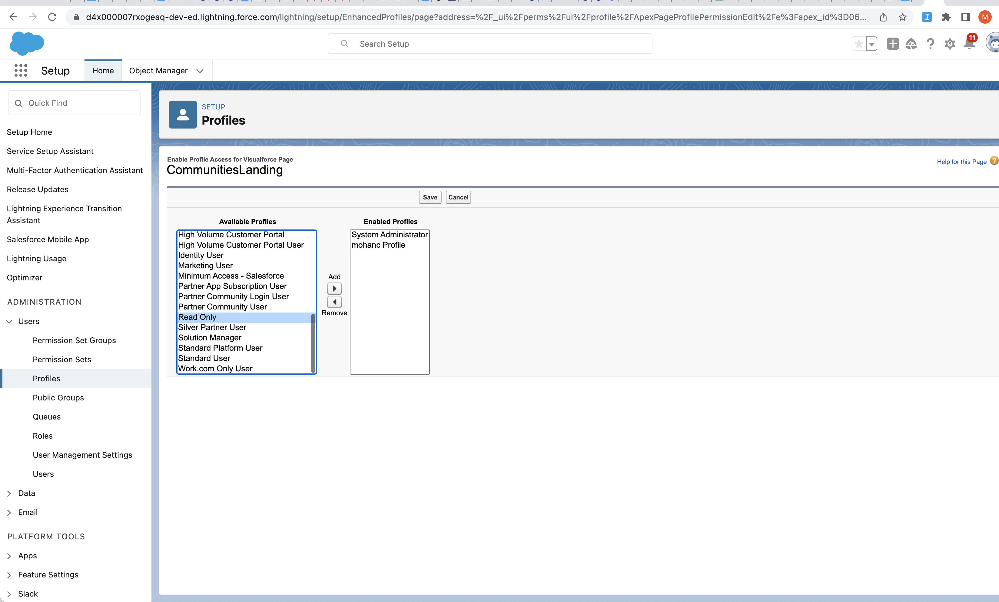
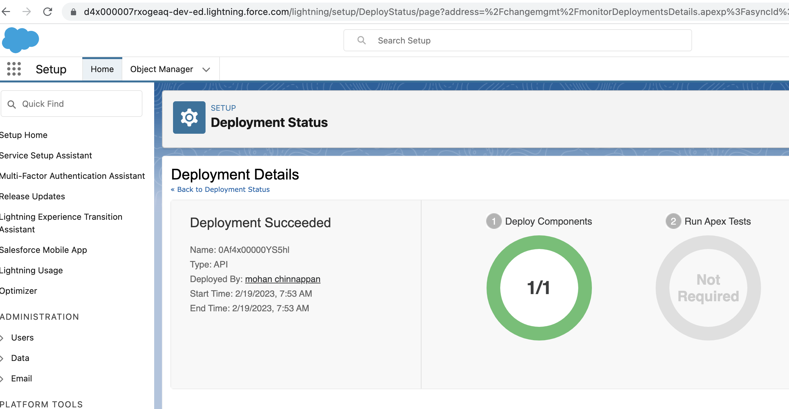
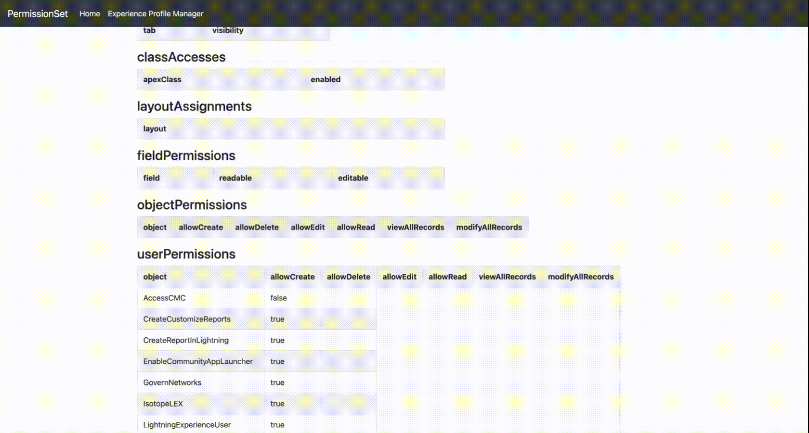

Profile, PermissionSet
Topics
- Retrieving Profile from an Org
- Retrieving Permission from an Org
- Comparing a profile in 2 orgs
- Incremental/delta deployment of profile entries
- Comparing a permissionset/profile between 2 git branches
- Viewing Profile components
- Micro-delta on Profile and PermissionSet
- Queries
- EOL for permissions on profiles by Spring 26
- Visualize Profile, PermissionSet
How to retrieve Profile from an Org and verify its correctness?
Demo Video
- Explains :
- How to Retrieve a Profile from a Salesforce org and check its validity and talks about how you can commit it back into version control and deploy into another Salesforce org
sfdx mohanc:mdapi:helper:retrieve -m Profile -u mohan.chinnappan.n.sel@gmail.com -n "Admin"
==== Writing to ./43/unpackaged/profiles/Admin.profile-meta.xml... ====
==== Writing package.xml into ./43/unpackaged/package.xml... ====
==== Executing zip command: zip -r 43.zip unpackaged ====
==== RUN: cd 43; sfdx force:mdapi:deploy -f 43.zip -u mohan.chinnappan.n.sel@gmail.com -w 1000 --verbose -c ====
~/test2 >vi 43/unpackaged/profiles/Admin.profile-meta.xml
~/test2 >cd 43; sfdx force:mdapi:deploy -f 43.zip -u mohan.chinnappan.n.sel@gmail.com -w 1000 --verbose -c
Deploying metadata to mohan.chinnappan.n.sel@gmail.com using the v56.0 SOAP API
Deploy ID: 0Af4x00000YA7XwCAL
DEPLOY PROGRESS | ████████████████████████████████████████ | 1/1 Components
=== Deployed Source
Type File Name Id
─────── ────────────────────────────────────────── ─────────── ──────────────────
unpackaged/package.xml package.xml
Profile unpackaged/profiles/Admin.profile-meta.xml Admin 00e4x000002b8IgAAI
~/test2/43 >cd ..
~/test2 >!v
vi 43/unpackaged/profiles/Admin.profile-meta.xml
- Note you can pass comma separated list of Profiles to this command like
sfdx mohanc:mdapi:helper:retrieve -m Profile -u mohan.chinnappan.n.sel@gmail.com -n "Profile1, Profile2"
How to retrieve Permission Set from an Org and verify its correctness?
Demo Video
~/test2 > sfdx mohanc:mdapi:helper:retrieve -m PermissionSet -u mohan.chinnappan.n.sel@gmail.com -n 'Experience_Profile_Manager'
==== Writing to ./41/unpackaged/permissionsets/Experience_Profile_Manager.permissionset-meta.xml... ====
==== Writing package.xml into ./41/unpackaged/package.xml... ====
==== Executing zip command: zip -r 41.zip unpackaged ====
==== RUN: cd 41; sfdx force:mdapi:deploy -f 41.zip -u mohan.chinnappan.n.sel@gmail.com -w 1000 --verbose -c ====
~/test2 >vi 41/unpackaged/permissionsets/Experience_Profile_Manager.permissionset-meta.xml
~/test2 >cd 41; sfdx force:mdapi:deploy -f 41.zip -u mohan.chinnappan.n.sel@gmail.com -w 1000 --verbose -c
Deploying metadata to mohan.chinnappan.n.sel@gmail.com using the v56.0 SOAP API
Deploy ID: 0Af4x00000YA7YGCA1
DEPLOY PROGRESS | ████████████████████████████████████████ | 1/1 Components
=== Deployed Source
Type File Name Id
───────────── ─────────────────────────────────────────────────────────────────────────── ────────────────────────── ──────────────────
unpackaged/package.xml package.xml
PermissionSet unpackaged/permissionsets/Experience_Profile_Manager.permissionset-meta.xml Experience_Profile_Manager 0PS4x0000045OQEGA2
~/test2/41 >
- Note you can pass comma separated list of PermissionSets API Names to this command like
sfdx mohanc:mdapi:helper:retrieve -m PermissionSet -u mohan.chinnappan.n.sel@gmail.com -n "Acct_View_All, Oppty_View_All"
Comparing a profile in 2 orgs
~/treeprj [patch1] > sfdx mohanc:mdapi:helper:rc2 -m Profile -o mohan.chinnappan.n.sel@gmail.com,mohan.chinnappan.n.sel2@gmail.com -n Admin
==== sfdx mohanc:mdapi:helper:retrieveSimple -u mohan.chinnappan.n.sel@gmail.com -m Profile -n "Admin" > /var/folders/ch/p19n6yj11wd1vp5c3svhpt800000gp/T/Profile-Admin.xml ====
==== sfdx mohanc:mdapi:helper:retrieveSimple -u mohan.chinnappan.n.sel2@gmail.com -m Profile -n "Admin" > /var/folders/ch/p19n6yj11wd1vp5c3svhpt800000gp/T/Profile-Admin.xml ====
~/treeprj [patch1] >
Package xml
- For Profile
<?xml version=1.0 encoding=UTF-8 standalone=yes?>
<Package xmlns=http://soap.sforce.com/2006/04/metadata>
<types>
<members>*</members>
<name>ApexClass</name>
</types>
<types>
<members>*</members>
<name>ApexPage</name>
</types>
<types>
<members>*</members>
<name>CustomApplication</name>
</types>
<!-- need to specify Object.Field
<types>
<members>*</members>
<name>CustomField</name>
</types>
-->
<types>
<members>*</members>
<name>CustomMetadata</name>
</types>
<types>
<members>*</members>
<name>CustomObject</name>
</types>
<types>
<members>*</members>
<name>CustomTab</name>
</types>
<types>
<members>*</members>
<name>ExternalDataSource</name>
</types>
<members>*</members>
<name>Layout</name>
</types>
<!-- needs specific value
<types>
<members>*</members>
<name>RecordType</name>
</types>
-->
<types>
<members>*</members>
<name>FlexiPage</name>
</types>
<types>
<members>*</members>
<name>Profile</name>
</types>
<version>56.0</version>
</Package>
- For Permission set
<?xml version=1.0 encoding=UTF-8 standalone=yes?>
<Package xmlns=http://soap.sforce.com/2006/04/metadata>
<types>
<members>*</members>
<name>ApexClass</name>
</types>
<types>
<members>*</members>
<name>ApexPage</name>
</types>
<types>
<members>*</members>
<name>CustomApplication</name>
</types>
<!-- need to specify Object.Field
<types>
<members>*</members>
<name>CustomField</name>
</types>
-->
<types>
<members>*</members>
<name>CustomMetadata</name>
</types>
<types>
<members>*</members>
<name>CustomObject</name>
</types>
<types>
<members>*</members>
<name>CustomTab</name>
</types>
<types>
<members>*</members>
<name>ExternalDataSource</name>
</types>
<!-- needs specific value
<types>
<members>*</members>
<name>RecordType</name>
</types>
-->
<types>
<members>*</members>
<name>PermissionSet</name>
</types>
<version>56.0</version>
</Package>
Incremental/delta deployment of profile entries
Use Case
Read Only.profilecurrent has nopageAccessesforCommunitiesLanding

-
Current xml

-
We like to add this
pageAccessesin the fileRead Only.profile
<?xml version="1.0" encoding="UTF-8"?>
<Profile xmlns="http://soap.sforce.com/2006/04/metadata">
<pageAccesses>
<apexPage>CommunitiesLanding</apexPage>
<enabled>true</enabled>
</pageAccesses>
</Profile>
in an incremental manner instead of deploying the whole xml with

Steps
-
- Build the folders
mkdir 100
cd 100
mkdir unpackaged
cd unpackaged
mkdir profiles
-
- Build the
package.xmlusing this tool:
- Note this tool puts the package.xml content into your clipboard
- Build the
# Get the package.xml content from clipboard
pbpaste > package.xml
bat package.xml
───────┬────────────────────────────────────────────────────────────────────────────────────────────────────────────
│ File: package.xml
───────┼────────────────────────────────────────────────────────────────────────────────────────────────────────────
1 │ <?xml version="1.0" encoding="UTF-8"?>
2 │ <Package xmlns="http://soap.sforce.com/2006/04/metadata">
3 │ <version>56.0</version>
4 │
5 │ <types>
6 │ <members>Read Only</members>
7 │ <name>Profile</name>
8 │ </types>
9 │
10 │
11 │ </Package>
- Copy
Read Only.profileto profiles folder
/tmp/profile-exp/100/unpackaged >vi "profiles/Read Only.profile"
/tmp/profile-exp/100/unpackaged >bat "profiles/Read Only.profile"
───────┬────────────────────────────────────────────────────────────────────────────────────────────────────────────
│ File: profiles/Read Only.profile
───────┼────────────────────────────────────────────────────────────────────────────────────────────────────────────
1 │ <?xml version="1.0" encoding="UTF-8"?>
2 │ <Profile xmlns="http://soap.sforce.com/2006/04/metadata">
3 │ <pageAccesses>
4 │ <apexPage>CommunitiesLanding</apexPage>
5 │ <enabled>true</enabled>
6 │ </pageAccesses>
7 │ </Profile>
8 │
9 │
10 │
───────┴────────────────────────────────────────────────────────────────────────────────────────────────────────────
- zip the package
/tmp/profile-exp/100/unpackaged >cd ..
/tmp/profile-exp/100 >pwd
/tmp/profile-exp/100
/tmp/profile-exp/100 >zip -r 100.zip unpackaged
adding: unpackaged/ (stored 0%)
adding: unpackaged/package.xml (deflated 24%)
adding: unpackaged/profiles/ (stored 0%)
adding: unpackaged/profiles/Read Only.profile (deflated 29%)
>tree
.
├── 100.zip
└── unpackaged
├── package.xml
└── profiles
└── Read\ Only.profile
- Deploy 100.zip after you have logged into the org (checkOnly)
/tmp/profile-exp/100 >sfdx force:mdapi:deploy -f 100.zip -u mohan.chinnappan.n.sel@gmail.com -w 1000 --verbose -c
Deploying metadata to mohan.chinnappan.n.sel@gmail.com using the v57.0 SOAP API
Deploy ID: 0Af4x00000YS5fmCAD
DEPLOY PROGRESS | ████████████████████████████████████████ | 1/1 Components
=== Deployed Source
Type File Name Id
─────── ───────────────────────────────────── ─────────── ──────────────────
unpackaged/package.xml package.xml
Profile unpackaged/profiles/Read Only.profile Read Only 00e4x000002b8JCAAY
- Now Deploy
sfdx force:mdapi:deploy -f 100.zip -u mohan.chinnappan.n.sel@gmail.com -w 1000 --verbose
Deploying metadata to mohan.chinnappan.n.sel@gmail.com using the v57.0 SOAP API
Deploy ID: 0Af4x00000YS5hlCAD
DEPLOY PROGRESS | ████████████████████████████████████████ | 1/1 Components
=== Deployed Source
Type File Name Id
─────── ───────────────────────────────────── ─────────── ──────────────────
unpackaged/package.xml package.xml
Profile unpackaged/profiles/Read Only.profile Read Only 00e4x000002b8JCAAY
- Open the org to see the DeployStatus
sfdx force:org:open -p lightning/setup/DeployStatus/home -u mohan.chinnappan.n.sel@gmail.com

- Check this profile in the org

Viewing components in Profile/PermissionSet in the org
Get XML/JSON for the given Profile/PermissionSet in the org
sfdx mohanc:mdapi:helper:retrieveSimple -m Profile -u mohan.chinnappan.n.sel2@gmail.com -n Admin -f xml
sfdx mohanc:mdapi:helper:retrieveSimple -m Profile -u mohan.chinnappan.n.sel2@gmail.com -n Admin -f json
sfdx mohanc:mdapi:helper:retrieveSimple -m PermissionSet -u mohan.chinnappan.n.sel2@gmail.com -n "Experience_Profile_Manager" -f xml
sfdx mohanc:mdapi:helper:retrieveSimple -m PermissionSet -u mohan.chinnappan.n.sel2@gmail.com -n "Experience_Profile_Manager" -f json
sfdx mohanc:mdapi:helper:retrieveSimple -m PermissionSet -u mohan.chinnappan.n.sel2@gmail.com -n Experience_Profile_Manager -f dt -s objectPermissions
No data found!
Valid sections:
_________
applicationVisibilities
classAccesses
customPermissions
customMetadataTypeAccesses
fieldPermissions
layoutAssignments
objectPermissions
recordTypeVisibilities
tabVisibilities
userPermissions
________
PermissionSet
sfdx mohanc:mdapi:helper:retrieveSimple -m PermissionSet -u mohan.chinnappan.n.sel2@gmail.com -n Experience_Profile_Manager -f dt -s userPermissions

Profile
sfdx mohanc:mdapi:helper:retrieveSimple -m Profile -u mohan.chinnappan.n.sel2@gmail.com -n Admin -f dt -s userPermissions

Micro-delta on Profile and PermissionSet
Use case
- We like to know the delta for a Profile or PermissionSet in the version control (which is in our local folder) with the same Profile or PermissionSet in the Org
- Tool should be able to produce a micro-delta profile or PermissionSet xml file which we can use for our delta deployments
sfdx mohanc:mdapi:helper:retrieveSimple -m Profile -u mohan.chinnappan.n.sel2@gmail.com -n Admin -f jsonSection -l ~/treeprj/force-app/main/default/profiles/Admin.profile-meta.xml -s ALL
Flags:
- -m Profile - metadata type
- -u is user name to login into the org
- -n Admin : We are working with Admin Proffile
- -f jsonSection : we like to go by section by section
- -l is the local file we got from the version control
- -s All says all the sections
Sections
{
"applicationVisibilities": "application",
"classAccesses": "apexClass",
"customPermissions":"name",
"customMetadataTypeAccesses":"name",
"fieldPermissions":"field",
"layoutAssignments":"layout",
"objectPermissions":"object",
"recordTypeVisibilities":"recordType",
"tabVisibilities":"tab",
"userPermissions": "name"
}
Video about Micro-delta Profile file
cat /tmp/Admin_micro-delta.xml
<?xml version="1.0" encoding="UTF-8"?>
<Profile xmlns="http://soap.sforce.com/2006/04/metadata">
<!-- Diff item -->
<applicationVisibilities>
<application>standard__AllTabSet</application>
<default>false</default>
<visible>false</visible>
</applicationVisibilities>
<!-- New item -->
<applicationVisibilities>
<application>TESTAPP</application>
<default>false</default>
<visible>false</visible>
</applicationVisibilities>
<!-- New item -->
<applicationVisibilities>
<application>NEWAPP</application>
<default>false</default>
<visible>false</visible>
</applicationVisibilities>
<!-- Diff item -->
<classAccesses>
<apexClass>MyDomain</apexClass>
<enabled>false</enabled>
</classAccesses>
<!-- New item -->
<classAccesses>
<apexClass>Yourclass</apexClass>
<enabled>true</enabled>
</classAccesses>
<!-- Diff item -->
<fieldPermissions>
<editable>false</editable>
<field>Account.AccountNumber</field>
<readable>true</readable>
</fieldPermissions>
<!-- New item -->
<fieldPermissions>
<editable>true</editable>
<field>Account.testNumber__c</field>
<readable>true</readable>
</fieldPermissions>
<!-- New item -->
<fieldPermissions>
<editable>true</editable>
<field>Account.NewAccountNumber__c</field>
<readable>true</readable>
</fieldPermissions>
</Profile>
Permission Set
sfdx mohanc:mdapi:helper:retrieveSimple -m PermissionSet -u mohan.chinnappan.n.sel2@gmail.com -n "Experience_Profile_Manager" -f jsonSection -l ~/treeprj/force-app/main/default/permissionsets/Experience_Profile_Manager.permissionset-meta.xml -s ALL
<?xml version="1.0" encoding="UTF-8"?>
<PermissionSet xmlns="http://soap.sforce.com/2006/04/metadata">
<!-- Diff item -->
<userPermissions>
<enabled>false</enabled>
<name>AccessCMC</name>
</userPermissions>
How about getting micro-delta between 2 local files (may be coming from 2 branches)
- with
-xflag you can provide second file - this file will be treated as it is from the org
sfdx mohanc:mdapi:helper:retrieveSimple -m PermissionSet -u mohan.chinnappan.n.sel2@gmail.com -n "Experience_Profile_Manager" -f jsonSection -l ~/treeprj/force-app/main/default/permissionsets/Experience_Profile_Manager.permissionset-meta.xml -s ALL -x /tmp/EPM.permissionset-meta.xml
<?xml version="1.0" encoding="UTF-8"?>
<PermissionSet xmlns="http://soap.sforce.com/2006/04/metadata">
<!-- Diff item -->
<userPermissions>
<enabled>false</enabled>
<name>AccessCMC</name>
</userPermissions>
<!-- Diff item -->
<userPermissions>
<enabled>true</enabled>
<name>CreateReportInLightning</name>
</userPermissions>
</PermissionSet>
Prepare the diff viewer
pbcopy < ~/treeprj/force-app/main/default/permissionsets/Experience_Profile_Manager.permissionset-meta.xml
# Put the clipboard content into left side of the https://mohan-chinnappan-n5.github.io/delta/diff.html
pbcopy < /tmp/EPM.permissionset-meta.xml
# Now put the clipboard content into left side of the https://mohan-chinnappan-n5.github.io/delta/diff.html

Comparing a permissionset/profile between 2 git branches
Demo video
Commands used in this video
~/lwc/dreamhouse-lwc [feature-1] >git branch -a
* feature-1
main
remotes/origin/HEAD -> origin/main
remotes/origin/main
vi force-app/main/default/permissionsets/dreamhouse.permissionset-meta.xml
~/lwc/dreamhouse-lwc [feature-1] >git checkout main
Switched to branch 'main'
Your branch is up to date with 'origin/main'.
vi force-app/main/default/permissionsets/dreamhouse.permissionset-meta.xml
~/lwc/dreamhouse-lwc [main] >python3 ~/sf-git-utils/git_diff_file_two_branches.py --branch1=main --branch2=feature-1 --filepath="force-app/main/default/permissionsets/dreamhouse.permissionset-meta.xml" --metadataType='permissionset' --help
usage: git_diff_file_two_branches.py [-h] [--branch1 BRANCH1] [--branch2 BRANCH2] [--filepath FILEPATH]
[--metadataType METADATATYPE]
Get content for a file from given 2 branches
options:
-h, --help show this help message and exit
--branch1 BRANCH1 branch1 (Default: main)
--branch2 BRANCH2 branch2 (Default: develop)
--filepath FILEPATH File path for the file (Default: README.md)
--metadataType METADATATYPE
profile or permission set (Default: profile)
Get given file content in given 2 branches
~/lwc/dreamhouse-lwc [main] >python3 ~/sf-git-utils/git_diff_file_two_branches.py --branch1=main --branch2=feature-1 --filepath="force-app/main/default/permissionsets/dreamhouse.permissionset-meta.xml" --metadataType='permissionset'
=== Checking out main ===
Already on 'main'
Temporary file name: /var/folders/ch/p19n6yj11wd1vp5c3svhpt800000gp/T/tmpa701j416
=== Going to run xml transform...===
=== Writing the output into file : /var/folders/ch/p19n6yj11wd1vp5c3svhpt800000gp/T/tmpa701j416.html ===
=== Contents of /var/folders/ch/p19n6yj11wd1vp5c3svhpt800000gp/T/tmpa701j416 is copied into your clipboard. Opening the diff app... ===
=== ACTION REQUIRED: Paste the content into the diff app, once it opens up... and press [Enter] ===
=== Continuing with the program... ===
=== checking out feature-1 ===
Switched to branch 'feature-1'
Temporary file name: /var/folders/ch/p19n6yj11wd1vp5c3svhpt800000gp/T/tmp2rdylch1
going to run xml transform...
=== Writing the output into file : /var/folders/ch/p19n6yj11wd1vp5c3svhpt800000gp/T/tmp2rdylch1.html ===
=== Contents of /var/folders/ch/p19n6yj11wd1vp5c3svhpt800000gp/T/tmp2rdylch1 is copied into your clipboard. Goto the diff app... ===
=== ACTION REQUIRED: Paste the content into the diff app right side box ===
Tools
Queries
Query to check users assigned with a given permissionset
SELECT id,PermissionSetId, Assignee.Name, Assignee.id FROM PermissionSetAssignment
WHERE PermissionSet.Name = 'SalesUserPsl'

End of life (EOL) of permissions on profiles
- Permission sets are the future of user management
- End of life (EOL) of permissions on profiles that will be the Spring ’26 release.
What will remain on a profile?
- One-to-one relationships
- login hours/IP ranges
- Defaults—record types, apps
- Page layout assignment
- The future is App Builder/Dynamic Forms so Salesforce will not invest in bringing page layout assignment to permission sets.
What will be available only on permission sets after this EOL?
- User permissions (system and app permissions)
- Object permissions (object Create, Read, Update, and Delete - CRUD)
- Field permissions (field-level security FLS)
- Tabs
- Record types (not defaults)
- Apps (not defaults)
- Connected app access
- Apex classes
- Visualforce pages
- Custom permissions
Turning of Profiles before EOL
- Turning off the ability to use permissions on profiles before the official EOL - targeted for Spring ’24 release
References
Visualize Profile, PermissionSet
Profile
sfdx mohanc:xml:transform -i <ProfileXmlFile> -m Profile
sfdx mohanc:xml:transform -i force-app/main/default/profiles/Admin.profile-meta.xml -m Profile```
PermissionSet
sfdx mohanc:xml:transform -i force-app/main/default/permissionsets/Experience_Profile_Manager.permissionset-meta.xml -m PermissionSet
Demos

Using xmlutil executable
- Download the tool
- Put the downloaded tool in your PATH
- You need to give permission to run this command in your macOS via System Settings > Privacy & Security
- Make it executable
chmod +x xmlutil
- Visualize Permission Set
xmlutil transform --xml=MyTest.profile-meta.xml --xsl=PermissionSet3 --out=/tmp/myTest.html
- Visualize Profile
xmlutil transform --xml=MyProfile.permissionset-meta.xml --xsl=Profile3 --out=/tmp/myProfile.html
- Visualize CustomLabels
xmlutil transform --xml=CustomLabels.labels-meta.xml --xsl=CustomLabel2 --out=/tmp/cl.html
How to get Visualization for all the profiles or permissionsets in the given folder
-
Make sure that xmlutil executable is in your PATH to make this work
-
Download the scripts
bash process_profile.sh <profiles folder>
bash process_ps.sh <permissionsets folder>
- Example for permissionsets
bash process_ps.sh ~/treeprj/force-app/main/default/permissionsets
=== 1: Processing /Users/mchinnappan/treeprj/force-app/main/default/permissionsets/Experience_Profile_Manager.permissionset-meta.xml file...
=== Output is written into /tmp/_viz_PermissionSet/Experience_Profile_Manager.permissionset-meta.xml.html, view this file in your web browser: open /tmp/_viz_PermissionSet/Experience_Profile_Manager.permissionset-meta.xml.html ===
-------------------------------------------
=== 2: Processing /Users/mchinnappan/treeprj/force-app/main/default/permissionsets/Manage_Encryption_Keys.permissionset-meta.xml file...
=== Output is written into /tmp/_viz_PermissionSet/Manage_Encryption_Keys.permissionset-meta.xml.html, view this file in your web browser: open /tmp/_viz_PermissionSet/Manage_Encryption_Keys.permissionset-meta.xml.html ===
-------------------------------------------
=== 3: Processing /Users/mchinnappan/treeprj/force-app/main/default/permissionsets/sf_devops_InitializeEnvironments.permissionset-meta.xml file...
=== Output is written into /tmp/_viz_PermissionSet/sf_devops_InitializeEnvironments.permissionset-meta.xml.html, view this file in your web browser: open /tmp/_viz_PermissionSet/sf_devops_InitializeEnvironments.permissionset-meta.xml.html ===
-------------------------------------------
=== 4: Processing /Users/mchinnappan/treeprj/force-app/main/default/permissionsets/sf_devops_NamedCredentials.permissionset-meta.xml file...
=== Output is written into /tmp/_viz_PermissionSet/sf_devops_NamedCredentials.permissionset-meta.xml.html, view this file in your web browser: open /tmp/_viz_PermissionSet/sf_devops_NamedCredentials.permissionset-meta.xml.html ===
-------------------------------------------
=== 4 processed ===
adding: tmp/_viz_PermissionSet/Experience_Profile_Manager.permissionset-meta.xml.html (deflated 79%)
adding: tmp/_viz_PermissionSet/Manage_Encryption_Keys.permissionset-meta.xml.html (deflated 80%)
adding: tmp/_viz_PermissionSet/sf_devops_InitializeEnvironments.permissionset-meta.xml.html (deflated 79%)
adding: tmp/_viz_PermissionSet/sf_devops_NamedCredentials.permissionset-meta.xml.html (deflated 79%)
=== _viz_PermissionSet_files.zip created ===
Package.xml for profile/permissionset covering sales objects
<?xml version="1.0" encoding="UTF-8"?>
<Package xmlns="http://soap.sforce.com/2006/04/metadata">
<version>56.0</version>
<!--
usage:
sfdx force:mdapi:retrieve -k profiles-with-stdobjects-package.xml -u <username> -r .
-->
<types>
<!-- needs to be customizable CustomObjects -->
<members>Account</members>
<members>Contact</members>
<members>Opportunity</members>
<members>Campaign</members>
<members>Case</members>
<members>Asset</members>
<members>Order</members>
<members>Lead</members>
<members>CampaignMember</members>
<members>Contract</members>
<name>CustomObject</name>
</types>
<types>
<members>*</members>
<name>Profile</name>
</types>
</Package>